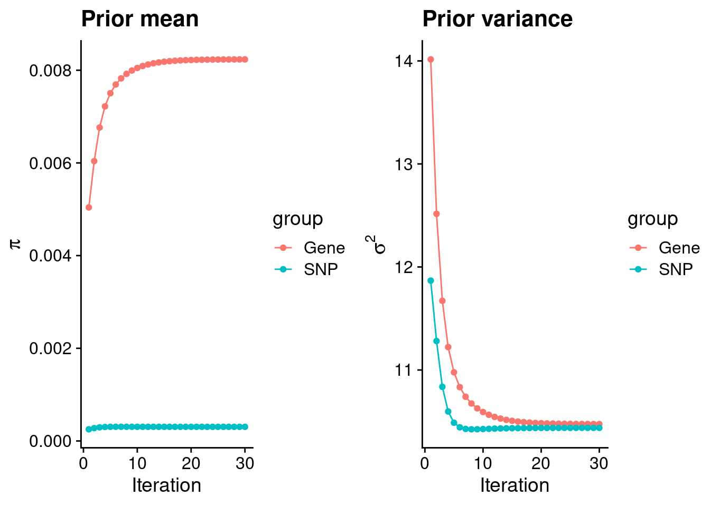
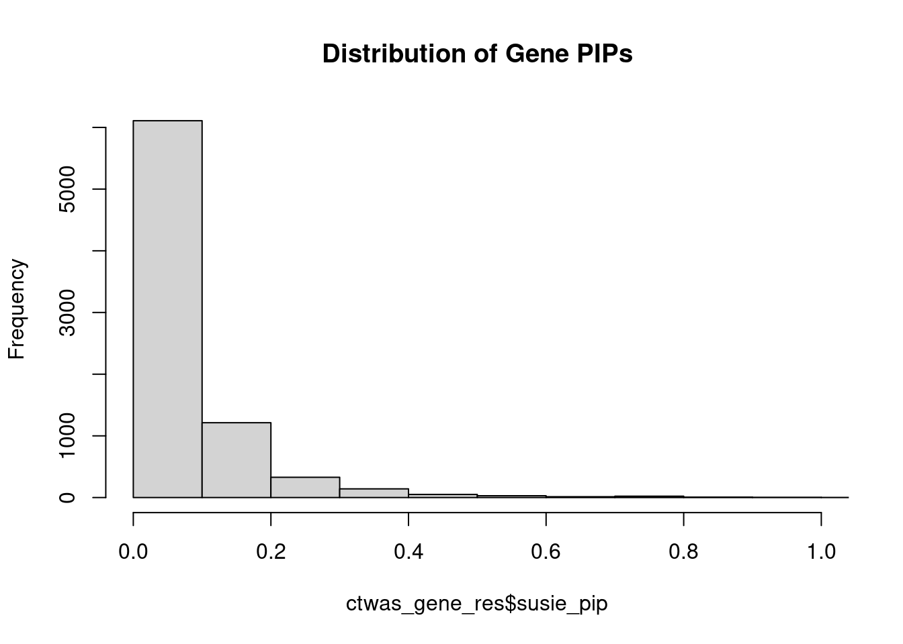
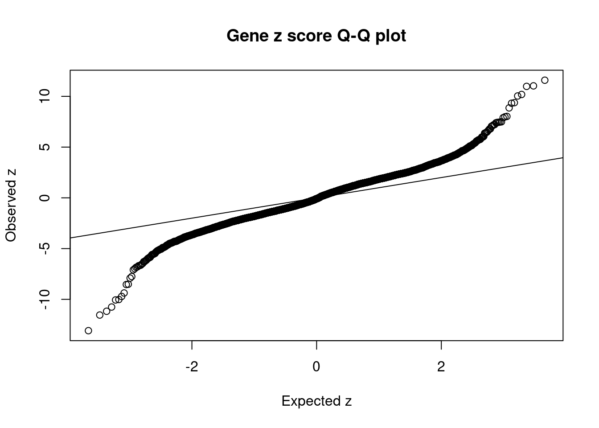
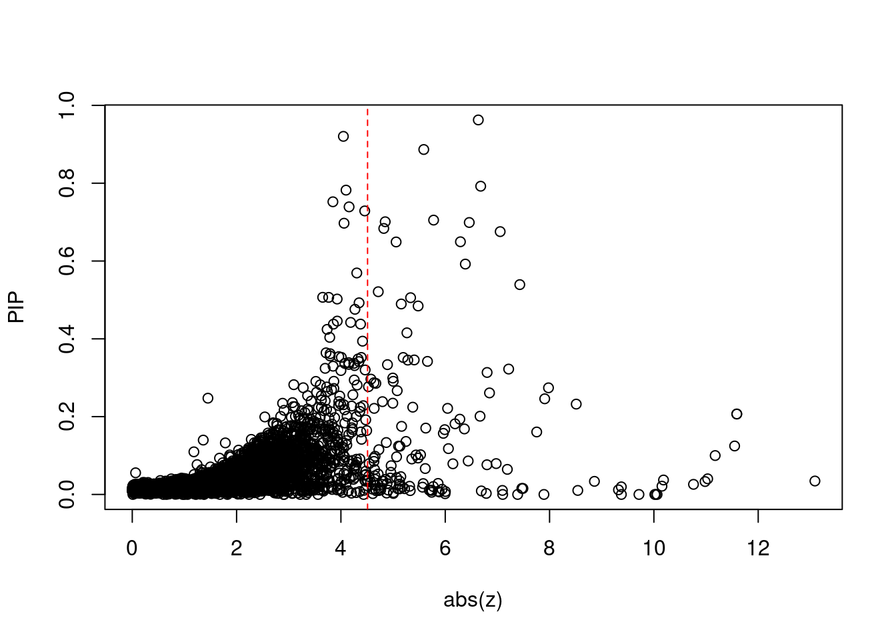
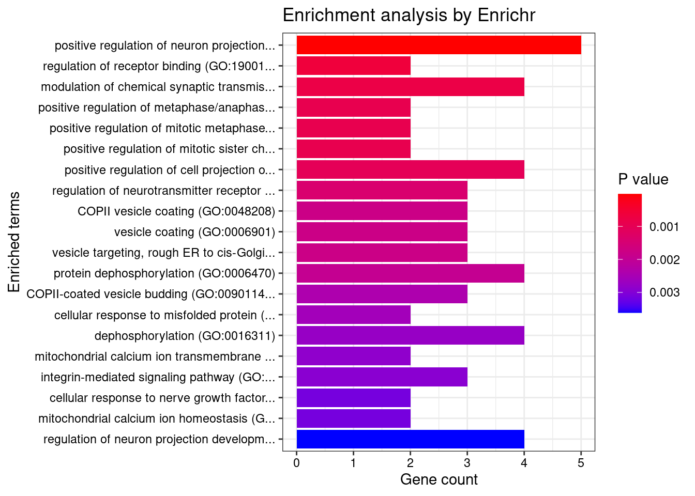
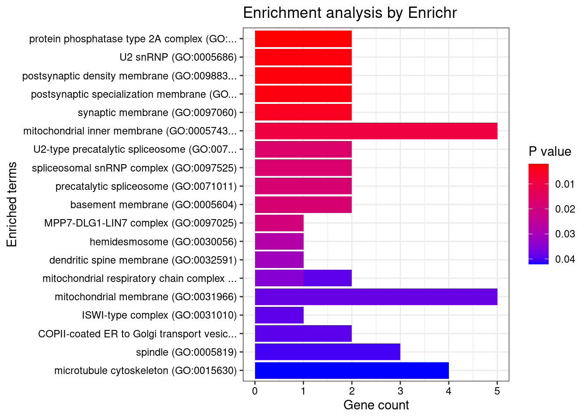
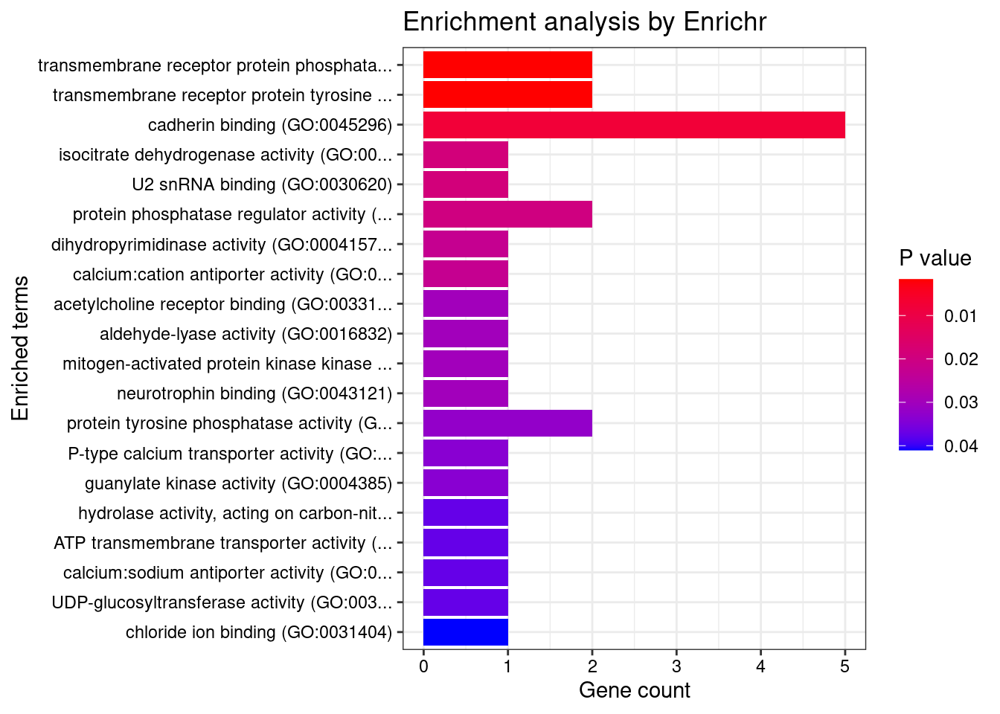
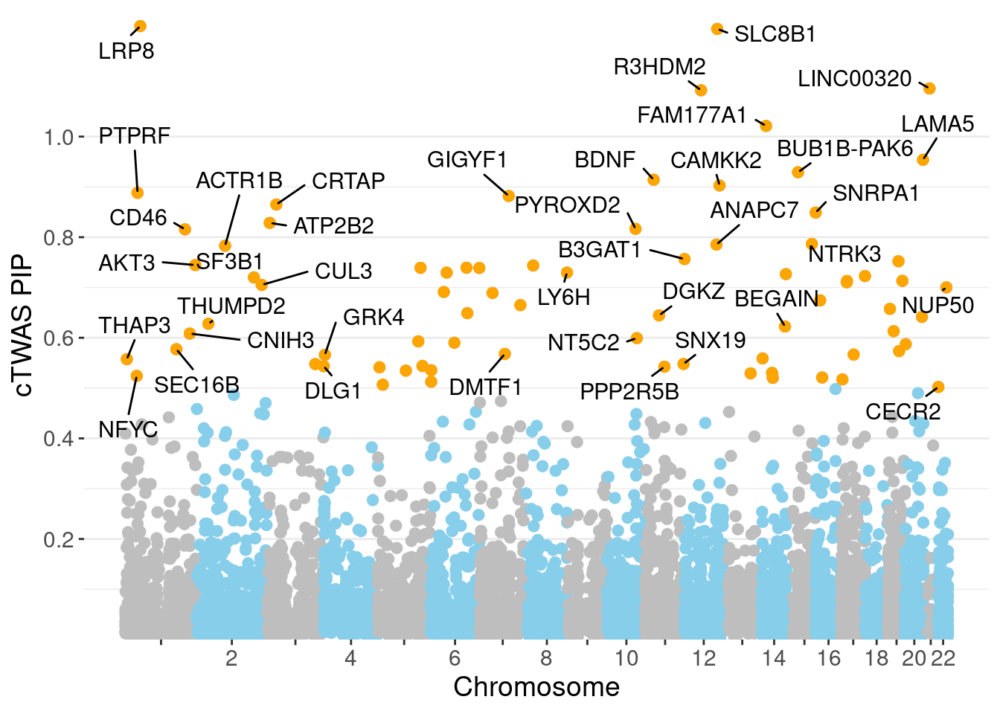

Last updated: 2022-05-19
Checks: 5 2
Knit directory: cTWAS_analysis/
This reproducible R Markdown analysis was created with workflowr (version 1.7.0). The Checks tab describes the reproducibility checks that were applied when the results were created. The Past versions tab lists the development history.
The R Markdown file has unstaged changes. To know which version of the R Markdown file created these results, you’ll want to first commit it to the Git repo. If you’re still working on the analysis, you can ignore this warning. When you’re finished, you can run wflow_publish to commit the R Markdown file and build the HTML.
Great job! The global environment was empty. Objects defined in the global environment can affect the analysis in your R Markdown file in unknown ways. For reproduciblity it’s best to always run the code in an empty environment.
The command set.seed(20211220) was run prior to running the code in the R Markdown file. Setting a seed ensures that any results that rely on randomness, e.g. subsampling or permutations, are reproducible.
Great job! Recording the operating system, R version, and package versions is critical for reproducibility.
Nice! There were no cached chunks for this analysis, so you can be confident that you successfully produced the results during this run.
Using absolute paths to the files within your workflowr project makes it difficult for you and others to run your code on a different machine. Change the absolute path(s) below to the suggested relative path(s) to make your code more reproducible.
| absolute | relative |
|---|---|
| /project2/xinhe/shengqian/cTWAS/cTWAS_analysis/data/ | data |
| /project2/xinhe/shengqian/cTWAS/cTWAS_analysis/code/ctwas_config.R | code/ctwas_config.R |
Great! You are using Git for version control. Tracking code development and connecting the code version to the results is critical for reproducibility.
The results in this page were generated with repository version be614ed. See the Past versions tab to see a history of the changes made to the R Markdown and HTML files.
Note that you need to be careful to ensure that all relevant files for the analysis have been committed to Git prior to generating the results (you can use wflow_publish or wflow_git_commit). workflowr only checks the R Markdown file, but you know if there are other scripts or data files that it depends on. Below is the status of the Git repository when the results were generated:
Ignored files:
Ignored: .Rhistory
Ignored: .ipynb_checkpoints/
Untracked files:
Untracked: G_list.RData
Untracked: Rplot.png
Untracked: SCZ_annotation.xlsx
Untracked: analysis/.ipynb_checkpoints/
Untracked: code/.ipynb_checkpoints/
Untracked: code/AF_out/
Untracked: code/Autism_out/
Untracked: code/BMI_S_out/
Untracked: code/BMI_out/
Untracked: code/Glucose_out/
Untracked: code/LDL_S_out/
Untracked: code/SCZ_2014_EUR_out/
Untracked: code/SCZ_2018_S_out/
Untracked: code/SCZ_2018_out/
Untracked: code/SCZ_2020_Single_out/
Untracked: code/SCZ_2020_out/
Untracked: code/SCZ_S_out/
Untracked: code/SCZ_out/
Untracked: code/T2D_out/
Untracked: code/ctwas_config.R
Untracked: code/mapping.R
Untracked: code/out/
Untracked: code/process_scz_2018_snps.R
Untracked: code/run_AF_analysis.sbatch
Untracked: code/run_AF_analysis.sh
Untracked: code/run_AF_ctwas_rss_LDR.R
Untracked: code/run_Autism_analysis.sbatch
Untracked: code/run_Autism_analysis.sh
Untracked: code/run_Autism_ctwas_rss_LDR.R
Untracked: code/run_BMI_analysis.sbatch
Untracked: code/run_BMI_analysis.sh
Untracked: code/run_BMI_analysis_S.sbatch
Untracked: code/run_BMI_analysis_S.sh
Untracked: code/run_BMI_ctwas_rss_LDR.R
Untracked: code/run_BMI_ctwas_rss_LDR_S.R
Untracked: code/run_Glucose_analysis.sbatch
Untracked: code/run_Glucose_analysis.sh
Untracked: code/run_Glucose_ctwas_rss_LDR.R
Untracked: code/run_LDL_analysis_S.sbatch
Untracked: code/run_LDL_analysis_S.sh
Untracked: code/run_LDL_ctwas_rss_LDR_S.R
Untracked: code/run_SCZ_2014_EUR_analysis.sbatch
Untracked: code/run_SCZ_2014_EUR_analysis.sh
Untracked: code/run_SCZ_2014_EUR_ctwas_rss_LDR.R
Untracked: code/run_SCZ_2018_analysis.sbatch
Untracked: code/run_SCZ_2018_analysis.sh
Untracked: code/run_SCZ_2018_analysis_S.sbatch
Untracked: code/run_SCZ_2018_analysis_S.sh
Untracked: code/run_SCZ_2018_ctwas_rss_LDR.R
Untracked: code/run_SCZ_2018_ctwas_rss_LDR_S.R
Untracked: code/run_SCZ_2020_Single_analysis.sbatch
Untracked: code/run_SCZ_2020_Single_analysis.sh
Untracked: code/run_SCZ_2020_Single_ctwas_rss_LDR.R
Untracked: code/run_SCZ_2020_analysis.sbatch
Untracked: code/run_SCZ_2020_analysis.sh
Untracked: code/run_SCZ_2020_ctwas_rss_LDR.R
Untracked: code/run_SCZ_analysis.sbatch
Untracked: code/run_SCZ_analysis.sh
Untracked: code/run_SCZ_analysis_S.sbatch
Untracked: code/run_SCZ_analysis_S.sh
Untracked: code/run_SCZ_ctwas_rss_LDR.R
Untracked: code/run_SCZ_ctwas_rss_LDR_S.R
Untracked: code/run_T2D_analysis.sbatch
Untracked: code/run_T2D_analysis.sh
Untracked: code/run_T2D_ctwas_rss_LDR.R
Untracked: code/wflow_build.R
Untracked: code/wflow_build.sbatch
Untracked: data/.ipynb_checkpoints/
Untracked: data/GO_Terms/
Untracked: data/PGC3_SCZ_wave3_public.v2.tsv
Untracked: data/SCZ/
Untracked: data/SCZ_2014_EUR/
Untracked: data/SCZ_2018/
Untracked: data/SCZ_2018_S/
Untracked: data/SCZ_2020/
Untracked: data/SCZ_S/
Untracked: data/Supplementary Table 15 - MAGMA.xlsx
Untracked: data/Supplementary Table 20 - Prioritised Genes.xlsx
Untracked: data/T2D/
Untracked: data/UKBB/
Untracked: data/UKBB_SNPs_Info.text
Untracked: data/gene_OMIM.txt
Untracked: data/gene_pip_0.8.txt
Untracked: data/mashr_Heart_Atrial_Appendage.db
Untracked: data/mashr_sqtl/
Untracked: data/scz_2018.RDS
Untracked: data/summary_known_genes_annotations.xlsx
Untracked: data/untitled.txt
Untracked: top_genes_32.txt
Untracked: top_genes_37.txt
Untracked: top_genes_43.txt
Untracked: top_genes_54.txt
Untracked: top_genes_81.txt
Untracked: z_snp_pos_SCZ.RData
Untracked: z_snp_pos_SCZ_2014_EUR.RData
Untracked: z_snp_pos_SCZ_2018.RData
Untracked: z_snp_pos_SCZ_2020.RData
Unstaged changes:
Deleted: analysis/BMI_S_results.Rmd
Modified: analysis/SCZ_2018_Brain_Amygdala_S.Rmd
Modified: analysis/SCZ_2018_Brain_Anterior_cingulate_cortex_BA24_S.Rmd
Modified: analysis/SCZ_2018_Brain_Caudate_basal_ganglia_S.Rmd
Modified: analysis/SCZ_2018_Brain_Cerebellar_Hemisphere_S.Rmd
Modified: analysis/SCZ_2018_Brain_Cerebellum_S.Rmd
Modified: analysis/SCZ_2018_Brain_Cortex_S.Rmd
Modified: analysis/SCZ_2018_Brain_Frontal_Cortex_BA9_S.Rmd
Modified: analysis/SCZ_2018_Brain_Hippocampus_S.Rmd
Modified: analysis/SCZ_2018_Brain_Hypothalamus_S.Rmd
Modified: analysis/SCZ_2018_Brain_Nucleus_accumbens_basal_ganglia_S.Rmd
Modified: analysis/SCZ_2018_Brain_Putamen_basal_ganglia_S.Rmd
Modified: analysis/SCZ_2018_Brain_Spinal_cord_cervical_c-1_S.Rmd
Modified: analysis/SCZ_2018_Brain_Substantia_nigra_S.Rmd
Modified: analysis/ttt.Rmd
Note that any generated files, e.g. HTML, png, CSS, etc., are not included in this status report because it is ok for generated content to have uncommitted changes.
These are the previous versions of the repository in which changes were made to the R Markdown (analysis/SCZ_2018_Brain_Cortex_S.Rmd) and HTML (docs/SCZ_2018_Brain_Cortex_S.html) files. If you’ve configured a remote Git repository (see ?wflow_git_remote), click on the hyperlinks in the table below to view the files as they were in that past version.
| File | Version | Author | Date | Message |
|---|---|---|---|---|
| Rmd | be614ed | sq-96 | 2022-05-19 | update |
| html | be614ed | sq-96 | 2022-05-19 | update |
| Rmd | 7d08c9b | sq-96 | 2022-05-18 | update |
| html | 7d08c9b | sq-96 | 2022-05-18 | update |
| Rmd | 2749be9 | sq-96 | 2022-05-12 | update |
| html | 2749be9 | sq-96 | 2022-05-12 | update |
| html | 011327d | sq-96 | 2022-05-12 | update |
| Rmd | 6c6abbd | sq-96 | 2022-05-12 | update |
library(reticulate)
use_python("/scratch/midway2/shengqian/miniconda3/envs/PythonForR/bin/python",required=T)#number of imputed weights
nrow(qclist_all)[1] 23372#number of imputed weights by chromosome
table(qclist_all$chr)
1 2 3 4 5 6 7 8 9 10 11 12 13 14 15 16
2106 1670 1401 900 973 1205 1349 834 978 1043 1384 1297 477 810 795 919
17 18 19 20 21 22
1718 307 1661 776 45 724 #number of imputed weights without missing variants
sum(qclist_all$nmiss==0)[1] 20390#proportion of imputed weights without missing variants
mean(qclist_all$nmiss==0)[1] 0.8724INFO:numexpr.utils:Note: NumExpr detected 56 cores but "NUMEXPR_MAX_THREADS" not set, so enforcing safe limit of 8.finish
Attaching package: 'dplyr'The following objects are masked from 'package:stats':
filter, lagThe following objects are masked from 'package:base':
intersect, setdiff, setequal, union
| Version | Author | Date |
|---|---|---|
| 2749be9 | sq-96 | 2022-05-12 |
gene snp
0.0082338 0.0003052 gene snp
10.48 10.44 [1] 105318[1] 7742 6309950 gene snp
0.00634 0.19088 [1] 0.01226 1.09222
genename region_tag susie_pip mu2 PVE z num_intron num_sqtl
5276 R3HDM2 12_36 0.9626 42.83 3.932e-04 -6.634 7 9
6190 SLC8B1 12_68 0.9203 22.26 2.113e-04 -4.047 10 10
838 BUB1B-PAK6 15_14 0.8866 29.77 2.245e-04 5.588 4 4
5228 PTPRF 1_27 0.7922 35.71 2.266e-04 6.680 6 6
6274 SNRPA1 15_50 0.7822 20.88 1.264e-04 -4.098 4 5
6711 THAP8 19_25 0.7522 21.59 1.160e-04 -3.846 1 2
2004 DPYSL3 5_86 0.7392 22.22 1.153e-04 -4.157 1 1
4482 NTRK3 15_41 0.7287 23.89 1.208e-04 4.457 3 3
1728 CUL3 2_132 0.7051 30.35 1.433e-04 5.777 1 1
2356 FAM177A1 14_9 0.7009 23.31 1.327e-04 4.849 13 16
3193 IRF3 19_34 0.6990 39.57 1.868e-04 -6.461 2 2
1042 CAMKK2 12_74 0.6971 35.27 1.555e-04 4.060 8 10
6340 SPECC1 17_16 0.6837 25.24 1.134e-04 -4.822 4 4
5969 SF3B1 2_117 0.6755 45.12 1.990e-04 7.053 3 3
292 AKT3 1_128 0.6495 34.40 1.497e-04 -6.291 5 5
5230 PTPRK 6_85 0.6490 28.20 1.128e-04 -5.059 1 1
352 ANAPC7 12_67 0.5921 39.18 1.510e-04 6.385 6 6
4057 MRPS33 7_87 0.5692 26.29 8.529e-05 -4.304 6 6
456 APOPT1 14_54 0.5393 43.77 1.593e-04 7.429 4 7
7227 UQCRC2 16_19 0.5211 22.85 5.891e-05 4.716 1 1 genename region_tag susie_pip mu2 PVE z num_intron
5276 R3HDM2 12_36 0.9626 42.83 0.0003932 -6.634 7
693 BAG6 6_26 0.2068 637.42 0.0002588 11.590 9
455 APOM 6_26 0.2068 637.42 0.0002588 11.590 2
5228 PTPRF 1_27 0.7922 35.71 0.0002266 6.680 6
838 BUB1B-PAK6 15_14 0.8866 29.77 0.0002245 5.588 4
6190 SLC8B1 12_68 0.9203 22.26 0.0002113 -4.047 10
5969 SF3B1 2_117 0.6755 45.12 0.0001990 7.053 3
3193 IRF3 19_34 0.6990 39.57 0.0001868 -6.461 2
456 APOPT1 14_54 0.5393 43.77 0.0001593 7.429 4
1042 CAMKK2 12_74 0.6971 35.27 0.0001555 4.060 8
352 ANAPC7 12_67 0.5921 39.18 0.0001510 6.385 6
292 AKT3 1_128 0.6495 34.40 0.0001497 -6.291 5
1728 CUL3 2_132 0.7051 30.35 0.0001433 5.777 1
3510 LINC00320 21_6 0.5057 28.55 0.0001432 5.336 5
2356 FAM177A1 14_9 0.7009 23.31 0.0001327 4.849 13
6274 SNRPA1 15_50 0.7822 20.88 0.0001264 -4.098 4
4482 NTRK3 15_41 0.7287 23.89 0.0001208 4.457 3
6711 THAP8 19_25 0.7522 21.59 0.0001160 -3.846 1
2004 DPYSL3 5_86 0.7392 22.22 0.0001153 -4.157 1
6340 SPECC1 17_16 0.6837 25.24 0.0001134 -4.822 4
num_sqtl
5276 9
693 9
455 2
5228 6
838 4
6190 10
5969 3
3193 2
456 7
1042 10
352 6
292 5
1728 1
3510 5
2356 16
6274 5
4482 3
6711 2
2004 1
6340 4

[1] 0.01899 genename region_tag susie_pip mu2 PVE z num_intron num_sqtl
4777 PGBD1 6_22 3.456e-02 158.26 1.118e-06 -13.087 3 5
455 APOM 6_26 2.068e-01 637.42 2.588e-04 11.590 2 2
693 BAG6 6_26 2.068e-01 637.42 2.588e-04 11.590 9 9
7287 VARS 6_26 1.246e-01 638.44 9.411e-05 -11.548 1 1
1821 DDR1 6_25 1.000e-01 101.67 1.052e-05 -11.175 2 2
966 C6orf136 6_24 4.018e-02 79.81 2.447e-06 11.031 2 2
2518 FLOT1 6_24 3.319e-02 78.48 3.961e-06 10.981 5 6
834 BTN3A2 6_20 2.597e-02 91.92 1.454e-06 -10.759 5 5
831 BTN2A1 6_20 3.717e-02 83.45 1.368e-06 10.185 6 7
2975 HLA-B 6_25 2.129e-02 77.13 4.549e-07 10.155 12 31
5078 PPT2 6_26 4.929e-12 474.58 2.190e-25 -10.061 5 5
2105 EGFL8 6_26 3.928e-12 473.96 7.121e-26 10.036 7 8
5142 PRRT1 6_26 3.440e-12 472.86 5.315e-26 -10.018 1 1
5558 RNF5 6_26 7.171e-13 467.32 2.282e-27 -9.714 1 1
2806 GPSM3 6_26 1.139e-13 424.06 1.045e-28 9.377 2 2
1176 CCHCR1 6_25 1.954e-02 62.94 5.542e-07 -9.376 11 15
7545 ZKSCAN3 6_22 1.192e-02 55.91 9.857e-08 9.321 2 3
2977 HLA-DMB 6_27 3.366e-02 68.96 7.526e-07 8.860 2 2
7734 ZSCAN23 6_22 1.033e-02 45.88 4.652e-08 -8.541 1 1
4470 NT5C2 10_66 2.322e-01 47.55 5.883e-05 -8.511 12 16#number of genes for gene set enrichment
length(genes)[1] 24Uploading data to Enrichr... Done.
Querying GO_Biological_Process_2021... Done.
Querying GO_Cellular_Component_2021... Done.
Querying GO_Molecular_Function_2021... Done.
Parsing results... Done.
[1] "GO_Biological_Process_2021"
Term
1 positive regulation of metaphase/anaphase transition of cell cycle (GO:1902101)
2 positive regulation of mitotic metaphase/anaphase transition (GO:0045842)
3 positive regulation of mitotic sister chromatid separation (GO:1901970)
4 regulation of mitotic metaphase/anaphase transition (GO:0030071)
Overlap Adjusted.P.value Genes
1 2/12 0.009283 ANAPC7;CUL3
2 2/12 0.009283 ANAPC7;CUL3
3 2/12 0.009283 ANAPC7;CUL3
4 2/26 0.033933 ANAPC7;CUL3
[1] "GO_Cellular_Component_2021"
Term Overlap
1 U2 snRNP (GO:0005686) 2/20
2 U2-type precatalytic spliceosome (GO:0071005) 2/50
3 spliceosomal snRNP complex (GO:0097525) 2/51
4 precatalytic spliceosome (GO:0071011) 2/52
5 U2-type spliceosomal complex (GO:0005684) 2/89
6 mitochondrial inner membrane (GO:0005743) 3/328
7 organelle inner membrane (GO:0019866) 3/346
8 mitochondrial respiratory chain complex III (GO:0005750) 1/9
9 mitochondrial respiratory chain complex IV (GO:0005751) 1/10
10 ISWI-type complex (GO:0031010) 1/10
11 intrinsic component of mitochondrial membrane (GO:0098573) 1/12
12 cullin-RING ubiquitin ligase complex (GO:0031461) 2/157
13 prespliceosome (GO:0071010) 1/15
14 U2-type prespliceosome (GO:0071004) 1/15
15 mitochondrial membrane (GO:0031966) 3/469
Adjusted.P.value Genes
1 0.009833 SNRPA1;SF3B1
2 0.016759 SNRPA1;SF3B1
3 0.016759 SNRPA1;SF3B1
4 0.016759 SNRPA1;SF3B1
5 0.038539 SNRPA1;SF3B1
6 0.043076 MRPS33;UQCRC2;SLC8B1
7 0.043076 MRPS33;UQCRC2;SLC8B1
8 0.045364 UQCRC2
9 0.045364 UQCRC2
10 0.045364 CECR2
11 0.045573 SLC8B1
12 0.045573 ANAPC7;CUL3
13 0.045573 SF3B1
14 0.045573 SF3B1
15 0.045573 MRPS33;UQCRC2;SLC8B1
[1] "GO_Molecular_Function_2021"
Term
1 transmembrane receptor protein phosphatase activity (GO:0019198)
2 transmembrane receptor protein tyrosine phosphatase activity (GO:0005001)
3 protein tyrosine phosphatase activity (GO:0004725)
4 U2 snRNA binding (GO:0030620)
5 dihydropyrimidinase activity (GO:0004157)
6 calcium:cation antiporter activity (GO:0015368)
7 protein tyrosine kinase activity (GO:0004713)
Overlap Adjusted.P.value Genes
1 2/16 0.00377 PTPRK;PTPRF
2 2/16 0.00377 PTPRK;PTPRF
3 2/74 0.04849 PTPRK;PTPRF
4 1/5 0.04849 SNRPA1
5 1/6 0.04849 DPYSL3
6 1/6 0.04849 SLC8B1
7 2/108 0.04849 NTRK3;CAMKK2 Description
34 Congenital absent nipple
55 Congenital absence of breast with absent nipple
78 PSEUDOHYPOALDOSTERONISM, TYPE IIE
80 MITOCHONDRIAL COMPLEX III DEFICIENCY, NUCLEAR TYPE 5
83 MEGALENCEPHALY-POLYMICROGYRIA-POLYDACTYLY-HYDROCEPHALUS SYNDROME 2
84 BREASTS AND/OR NIPPLES, APLASIA OR HYPOPLASIA OF, 2
85 ENCEPHALOPATHY, ACUTE, INFECTION-INDUCED (HERPES-SPECIFIC), SUSCEPTIBILITY TO, 7
65 Refractory anemia with ringed sideroblasts
68 Congenital Mesoblastic Nephroma
8 Fibrosarcoma
FDR Ratio BgRatio
34 0.01665 1/13 1/9703
55 0.01665 1/13 1/9703
78 0.01665 1/13 1/9703
80 0.01665 1/13 1/9703
83 0.01665 1/13 1/9703
84 0.01665 1/13 1/9703
85 0.01665 1/13 1/9703
65 0.02589 1/13 2/9703
68 0.02589 1/13 2/9703
8 0.02911 1/13 3/9703Warning: replacing previous import 'lifecycle::last_warnings' by
'rlang::last_warnings' when loading 'hms'Loading the functional categories...
Loading the ID list...
Loading the reference list...
Performing the enrichment analysis...Warning in oraEnrichment(interestGeneList, referenceGeneList, geneSet, minNum =
minNum, : No significant gene set is identified based on FDR 0.05!NULL
#number of genes in known annotations
print(length(known_annotations))[1] 130#number of genes in known annotations with imputed expression
print(sum(known_annotations %in% ctwas_gene_res$genename))[1] 53#significance threshold for TWAS
print(sig_thresh)[1] 4.511#number of ctwas genes
length(ctwas_genes)[1] 3#number of TWAS genes
length(twas_genes)[1] 147#show novel genes (ctwas genes with not in TWAS genes)
ctwas_gene_res[ctwas_gene_res$genename %in% novel_genes,report_cols] genename region_tag susie_pip mu2 PVE z num_intron num_sqtl
6190 SLC8B1 12_68 0.9203 22.26 0.0002113 -4.047 10 10#sensitivity / recall
print(sensitivity) ctwas TWAS
0.007692 0.107692 #specificity
print(specificity) ctwas TWAS
0.9997 0.9827 #precision / PPV
print(precision) ctwas TWAS
0.33333 0.09524
sessionInfo()R version 4.1.0 (2021-05-18)
Platform: x86_64-pc-linux-gnu (64-bit)
Running under: Scientific Linux 7.4 (Nitrogen)
Matrix products: default
BLAS/LAPACK: /software/openblas-0.3.13-el7-x86_64/lib/libopenblas_haswellp-r0.3.13.so
locale:
[1] LC_CTYPE=en_US.UTF-8 LC_NUMERIC=C
[3] LC_TIME=en_US.UTF-8 LC_COLLATE=en_US.UTF-8
[5] LC_MONETARY=en_US.UTF-8 LC_MESSAGES=en_US.UTF-8
[7] LC_PAPER=en_US.UTF-8 LC_NAME=C
[9] LC_ADDRESS=C LC_TELEPHONE=C
[11] LC_MEASUREMENT=en_US.UTF-8 LC_IDENTIFICATION=C
attached base packages:
[1] stats graphics grDevices utils datasets methods base
other attached packages:
[1] readxl_1.4.0 forcats_0.5.1 stringr_1.4.0 purrr_0.3.4
[5] readr_1.4.0 tidyr_1.1.3 tidyverse_1.3.1 tibble_3.1.7
[9] WebGestaltR_0.4.4 disgenet2r_0.99.2 enrichR_3.0 cowplot_1.1.1
[13] ggplot2_3.3.5 dplyr_1.0.7 reticulate_1.25 workflowr_1.7.0
loaded via a namespace (and not attached):
[1] fs_1.5.0 lubridate_1.7.10 doParallel_1.0.16 httr_1.4.2
[5] rprojroot_2.0.2 tools_4.1.0 backports_1.2.1 doRNG_1.8.2
[9] bslib_0.2.5.1 utf8_1.2.1 R6_2.5.0 vipor_0.4.5
[13] DBI_1.1.1 colorspace_2.0-2 withr_2.4.2 ggrastr_1.0.1
[17] tidyselect_1.1.1 processx_3.5.2 curl_4.3.2 compiler_4.1.0
[21] git2r_0.28.0 rvest_1.0.0 cli_3.0.0 Cairo_1.5-15
[25] xml2_1.3.2 labeling_0.4.2 sass_0.4.0 scales_1.1.1
[29] callr_3.7.0 systemfonts_1.0.4 apcluster_1.4.9 digest_0.6.27
[33] rmarkdown_2.9 svglite_2.0.0 pkgconfig_2.0.3 htmltools_0.5.1.1
[37] dbplyr_2.1.1 highr_0.9 rlang_1.0.2 rstudioapi_0.13
[41] jquerylib_0.1.4 farver_2.1.0 generics_0.1.0 jsonlite_1.7.2
[45] magrittr_2.0.1 Matrix_1.3-3 ggbeeswarm_0.6.0 Rcpp_1.0.7
[49] munsell_0.5.0 fansi_0.5.0 lifecycle_1.0.0 stringi_1.6.2
[53] whisker_0.4 yaml_2.2.1 plyr_1.8.6 grid_4.1.0
[57] ggrepel_0.9.1 parallel_4.1.0 promises_1.2.0.1 crayon_1.4.1
[61] lattice_0.20-44 haven_2.4.1 hms_1.1.0 knitr_1.33
[65] ps_1.6.0 pillar_1.7.0 igraph_1.2.6 rjson_0.2.20
[69] rngtools_1.5 reshape2_1.4.4 codetools_0.2-18 reprex_2.0.0
[73] glue_1.4.2 evaluate_0.14 getPass_0.2-2 modelr_0.1.8
[77] data.table_1.14.0 png_0.1-7 vctrs_0.3.8 httpuv_1.6.1
[81] foreach_1.5.1 cellranger_1.1.0 gtable_0.3.0 assertthat_0.2.1
[85] xfun_0.24 broom_0.7.8 later_1.2.0 iterators_1.0.13
[89] beeswarm_0.4.0 ellipsis_0.3.2 here_1.0.1